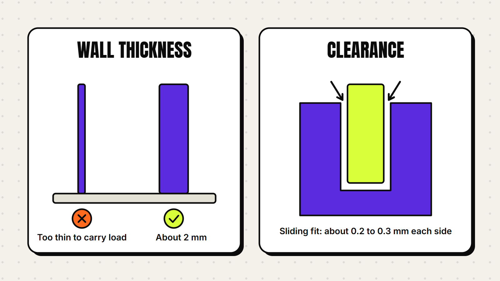
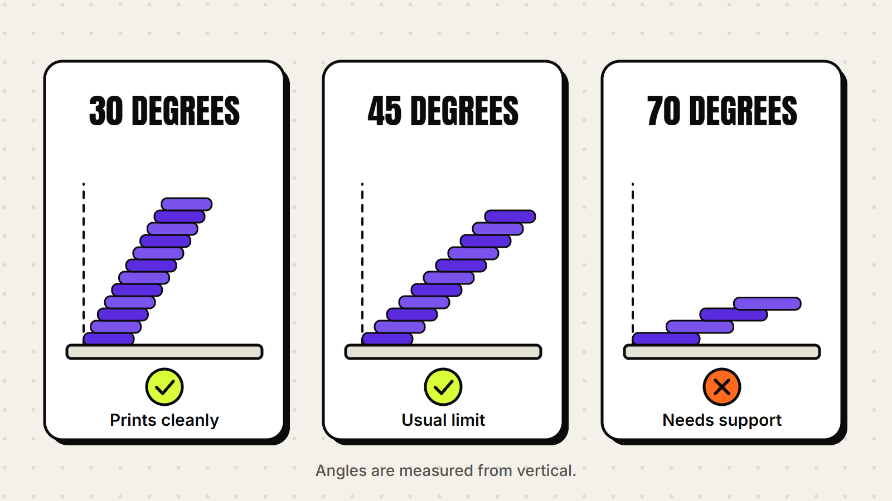

A model can look flawless on screen and still fail on the build plate. Screens ignore gravity, nozzle width, and shrinking plastic. A printer cannot. Designing for print means shaping the part around what the machine does well. Keep walls thick enough for the load, round or split steep overhangs, leave room between moving parts, and export in millimetres. The numbers below are sensible starting points for a filament printer with a 0.4 mm nozzle. Your material and machine may allow more or need more, so test anything that must fit precisely.
A wall is built from lines of plastic laid side by side. With a 0.4 mm nozzle, a wall thinner than about two lines is fragile, and very thin features may vanish from the sliced file altogether.
Thicknesses that divide neatly into line widths often print cleaner. Where more strength is needed, adding walls usually helps more than filling the inside densely. Avoid sudden jumps from very thick to very thin, which can cool unevenly and leave marks.

Each layer needs something under it. When a surface leans outwards, part of every new line hangs over empty air. A common rule is that angles up to about 45 degrees from vertical print cleanly without support. Beyond that, surfaces start to droop or turn rough.

Ways to handle a steep overhang:
A bridge is a straight span between two raised points. Printers can stretch plastic across a gap better than you might expect. Short spans, around 10 mm, are usually reliable. Longer ones can sag, depending on material and cooling. If the underside must look neat, redesign the span as an arch or add a central support.
Printed lines spread slightly, so outer dimensions can grow and holes can shrink. Two parts drawn at exactly the same size will not fit.
| Fit you want | Starting gap on each side |
|---|---|
| Tight, pressed together | About 0.1 to 0.2 mm |
| Sliding fit | About 0.2 to 0.3 mm |
| Loose or moving, printed as one piece | 0.4 mm or more |
Small holes often come out undersized, so draw them 0.2 to 0.4 mm larger, or plan to drill them to size. For parts that must match an existing object, send the object's measurements, ideally taken with a vernier caliper, and expect one test piece.
Filament parts are usually weakest between layers, much like wood splits along its grain. A tall thin peg printed upright can break with a light sideways push. Printed lying down, the same peg has continuous strands running along its length. Decide which way the force acts, then orient the part so that force runs along the layers rather than pulling them apart.
Round inner corners where an arm meets a base. A sharp inside corner concentrates stress, and a small fillet spreads it.
Every printer has a limit on the size it can build. Large objects can be divided into sections with keyed joints, so pieces locate themselves during assembly. Placing seams along natural edges or colour changes keeps them discreet.
Suppose you need a hook for a light bag. A first idea might be a thin L shape, 2 mm thick, with sharp corners and two screw holes the exact size of the screws.
None of these changes affects what the hook does, yet together they make it far more likely to survive daily use. Test it with the real load, close to the floor, before you trust it.
Tip: Before printing a large part, print only the section that has to fit. A small test saves material and shows if a clearance needs adjusting.
Next, learn how to prepare and export your file. If you would like help, attach what you have to the quote form, or ask our design service to model it from your sketch.